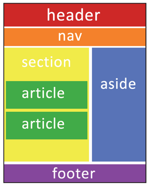

Etiquetas semánticas
Las etiquetas semánticas, son aquellas que dan un significado al documento y nos permiten crear un maquetado del diseño web. Ayudan a definir la estructura del documento y permiten que las páginas sean mejor indexadas por los buscadores web.
En las versiones anteriores de HTML la estructura de la página se basaba en etiquetas div. HTML5 incorpora nuevas etiquetas pensadas para hacer que la estructura de la página web sea más lógica y funcional.
A partir de esta versión, se incorporaron las etiquetas llamadas semánticas, las cuales son:
- header: Para definir la cabecera de la página.
- footer: Para definir el pie de página. Normalmente contiene datos sobre quien ha creado la página, datos de Copyright, etc.
- nav: Permite definir un elemento de navegación de la página web, como el menú principal o secundario.
- aside: Sirve para delimitar todo aquel contenido que no es directamente contenido principal de la página; puede usarse para todos los elementos secundarios, como bloques publicitarios, enlaces externos, citas, calendarios, etc.
- section: Se utiliza para encerrar el código de una sección genérica dentro de un documento.
- article: Se utiliza para definir artículos como noticias, entradas de blog, etc. Permite delimitar el contenido de una página web.

Estas etiquetas permiten que la sintáxis del sitio, sea mucho más lógica y coherente.Referencias
Celaya Luna, A. (2014). Creación de páginas web: HTML 5. Recuperado de: https://elibro-net.bibliotecavirtual.unad.edu.co/es/ereader/unad/56045